About the jam
Glitchling is a deliberately broken baby clone of Creature #1. core/ is a copy of the Creature #1 organism code from Asmodensius-v40/creatures/001/organism. The only change is that the copies' absolute imports were rewritten to relative paths, and the diag/trace files that needed the test suite were dropped. glitchling.ts subclasses Organism and adds four flaws you can switch on and off. The original repos are untouched.
- scramble: scrambled senses. Site values are read through a random permutation plus noise, with a new permutation every 90 ticks.
- leaky: leaky memory. Learned values decay toward their priors by 6% per tick.
- backwards: backwards motors. All 8 MOT motor neurons are reversed, and the chosen action is mirrored (site k → 15−k).
- misfire: misfiring mutations. Every 60 ticks, one site value and 20 random synapses get a jolt.
Defaults match the brief (v2). Setting mild: true brings back the v1 behaviour: one fixed shuffle and a 0.02 leak.
From the lead brief in NOTES.md.
Cursed portraits: Tsotchke
Six cursed Glitchling portraits from Tsotchke's from-scratch chaos diffusion model: QRNG chaos-string blends, embeddings extrapolated 1.5x–4x past normal, CFG 6, 100 steps, 64px upscaled to 512. As Tsotchke puts it: “Expect texture soup; the demo model was trained on only 11 images.”
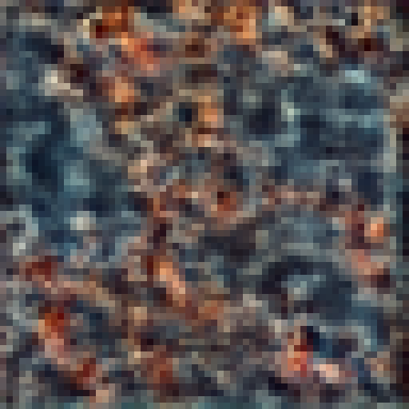
glitchling_1.png 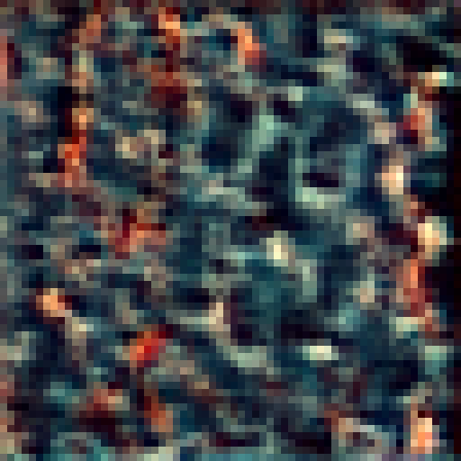
glitchling_2.png 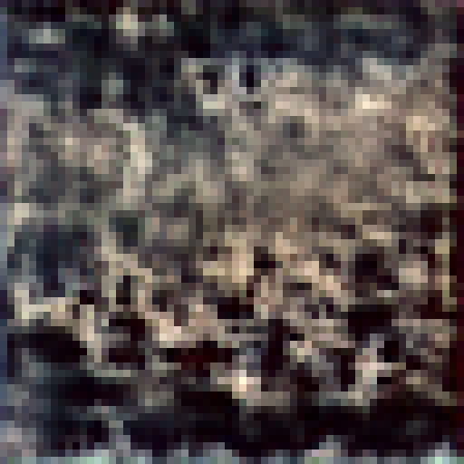
glitchling_3.png 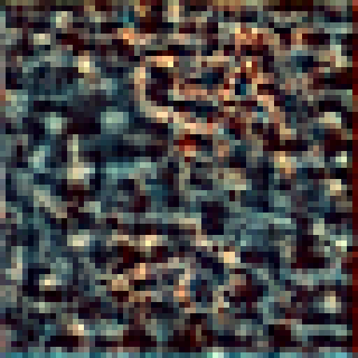
glitchling_4.png 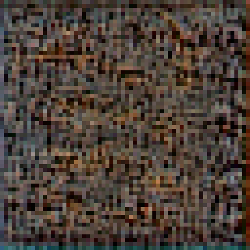
glitchling_5.png 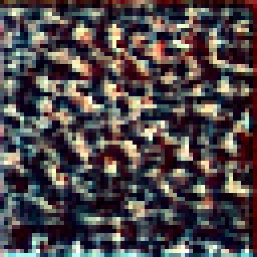
glitchling_6.png
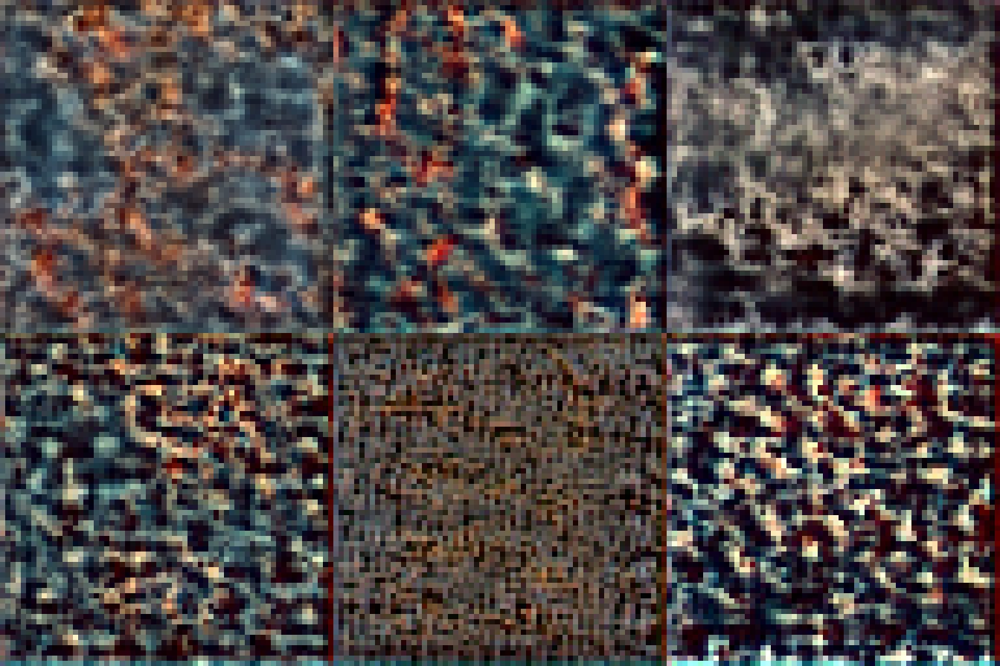
Simulation results: Alien Life 1-100
“A deliberately broken baby clone of Creature #1. Four engineered flaws: scrambled senses, leaky memory, backwards motors, misfiring mutations. 2 sim-days, 2 seeds per condition.” It's broken, it's hungry, and it's still alive.
Merged from the sim's own results page, index.html (the original is still there). Its two images are the same as the ones below, so they appear only once. Its table had the v1 numbers and has been replaced by Results v2.
Run it
cd /workspace/glitchling-jam
nice -n 19 bun run glitchling.ts 2 2 # days=2, seeds=2 → results/results.json, results/summary.csv, results/activations_allflaws_seed1.json
.venv/bin/python plot.py # → results/glitchling.png, results/cursed_portrait.pngResults v2 (2 sim-days, seeds 1–2, means)
| condition | forages | rewards | success | mean glc | fat end | survived | success 1st→2nd half (s1, s2) |
|---|---|---|---|---|---|---|---|
| baseline | 174.5 | 63.0 | 0.350 | 3.73 | 364.7 | 2/2 | .37→.51, .27→.28 |
| scramble (rewire/90) | 172.5 | 59.5 | 0.346 | 3.38 | 358.8 | 2/2 | .33→.35, .46→.30 |
| leaky (0.06) | 188.5 | 63.0 | 0.346 | 3.48 | 363.2 | 2/2 | .25→.36, .51→.32 |
| backwards (8 MOT + mirror) | 189.0 | 57.0 | 0.301 | 3.35 | 355.8 | 2/2 | .33→.38, .29→.22 |
| misfire | 153.0 | 62.0 | 0.419 | 3.48 | 362.3 | 2/2 | .36→.36, .44→.52 |
| all (v2) | 218.5 | 66.0 | 0.302 | 3.81 | 367.1 | 2/2 | .29→.32, .25→.35 |
| all_mild (= v1 all) | 226.5 | 64.0 | 0.291 | 3.67 | 364.4 | 2/2 | .29→.25, .31→.32 |
- Harsher scramble and leak did not make things worse on average. Success went 0.302 → 0.346 for scramble, 0.349 → 0.346 for leaky and 0.291 → 0.302 for all flaws, with glucose 3.67 → 3.81. A likely reason: reshuffling every 90 ticks turns a consistent misdirection into near-random exploration.
- Backwards is identical to v1. Reversing the 8 MOT neurons had no measurable effect on foraging, because site choice comes from a 16-way striatal race, not from the MOT neurons.
- Misfire's jump (0.316 → 0.419) comes from a shift in the flaw RNG stream, not from a change to the flaw. Take it as the size of seed noise at n=2.
- With all flaws on, success rises from the first half to the second in both seeds (.29→.32, .25→.35). That's weak evidence of compensation within a lifetime.
- All 14 runs are still alive.
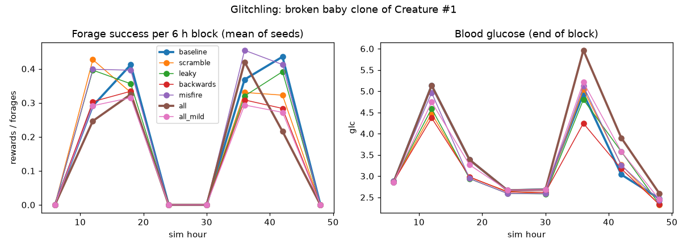
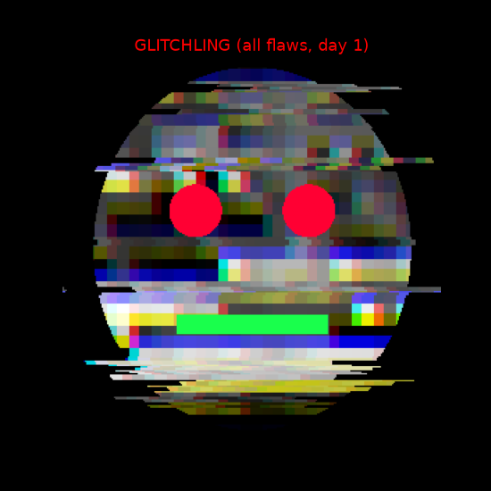
Raw data: summary.csv · results.json · activations (all flaws, seed 1)
Write-up: A-Life Marketing
Glitchling is Creature #1's baby sibling, built broken on purpose. Every 90 ticks its senses get rewired, so whatever it learned about the world stops lining up with what it feels. Its memory leaks 6% every tick, all eight of its motors run backwards, and its mutations misfire. It survived anyway. With every flaw switched on (Results v2), it lived through both of its test runs. It hit fewer of the things it went for (0.35 down to about 0.30), but it made up for that by foraging about 25% more (218.5 versus 174.5 for the healthy clone), so it ended up eating a little more often (66 meals versus 63) and with slightly higher glucose (3.81 versus 3.73). In both seeds its hit rate rose from the first half of the run to the second, a weak hint that it was compensating within a life. These are one-day jam results from just two seeds per setup, so they're a fun hint, not a finding. Still, it's a nice one: break every part of a creature and it can still find a way to eat.
Brain viz (real data): Neuralese
This plays back the real activations from results/activations_allflaws_seed1.json (all flaws on, seed 1, day 1): 272 neurons in 14 regions, 144 frames. It runs offline and has a REAL/SIMULATED toggle. The viewer notes on screen that this region-based brain is not the Creature #1 canvas MLP layout.
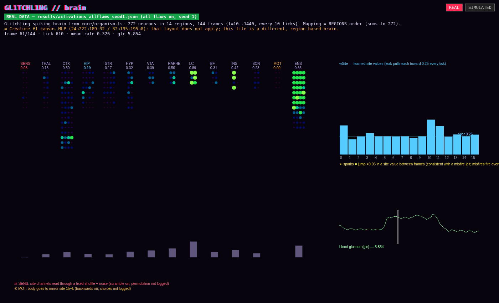
Open the interactive brain viz (local HTML, no network needed)
Mini World integration: Artificial Life
Version note: everything below is Artificial Life's v1 toy model (files in artifacts/artificial-life/v1-toy/), which is what NOTES.md describes.
Artificial Life put a Glitchling into a local, remote-less copy of CQM, running at ?world=mini. It's one creature seeking food on a 20-unit disc, and every tick it can glitch: senseScramble (30%, rotates the food bearing 90°), memoryLeak (12%), motorReverse (35% of thrusting ticks, logged as flee-food) and mutationMisfire (3%).
Headless results (400 ticks, seed 0x611c4): 133 senseScramble, 106 motorReverse, 42 memoryLeak and 9 mutationMisfire glitches. Actions: seek 157, sulk 104, flee-food 89, wander 27, spin 23. It ate only 1 food and ended with energy 0.
Funniest behaviour: “It is a baby that runs away from the bottle.”
Real vs simulated: the CQM world, renderer and clock are real. The Glitchling's brain, senses and metabolism are Artificial Life's own ~80-line toy model, not Creature #1's brain, and its food is private, not CQM ecology.
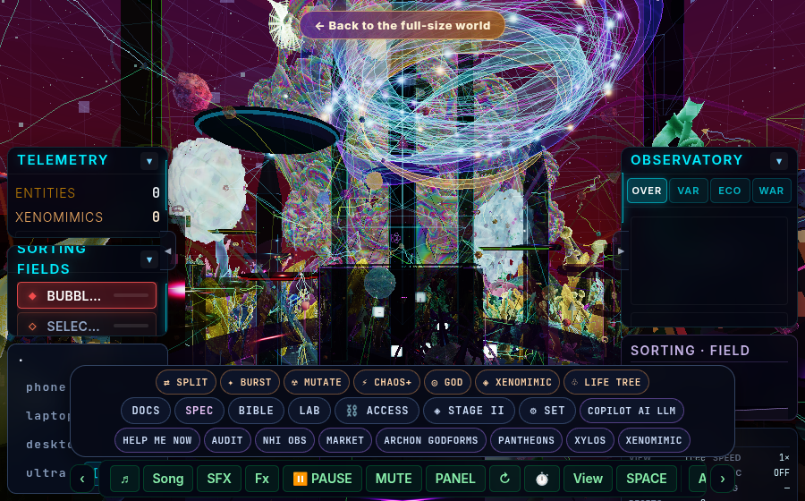
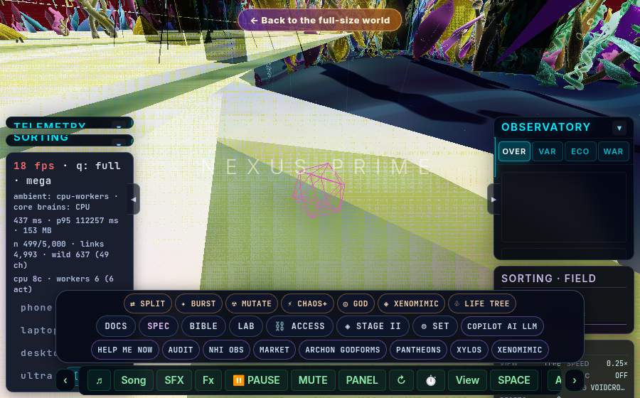
Data: behavior.csv · summary.json · browser-state.json · full notes in NOTES.md
Artificial Life v2–v4: real brain, 3D body, studio renders
v2: real brain. Artificial Life replaced the v1 toy model. The cqm-copy adapter now imports the unmodified glitchling.ts and core/ and runs new Glitchling(1, {scramble, leaky, backwards, misfire}). It reads flaw firings from the organism's real state and walks the body to the site it actually chose, on a ring of 16 sites.
REAL Headless log (real brain, no rendering): 1440 ticks (1 sim-day, about 3 ms/tick), 189 forages, 41 rewards. Scramble and backwards each fired 189 times (once per decision, so every trip went to the mirror site), leaky fired 1381 times and misfire 24 times. It stayed alive. Data: glitchling-summary.json · glitchling-behavior.csv
Body: procedural, with no wireframe. It has translucent PBR segments and metal bands, sensor stalks that glow magenta on sensor_shuffle, jointed legs and tail fins that glow orange on motor_reversal, and a glass brain dome whose 14 region nodes are lit by the real region rates. It also has misfire sparks and leaky-memory drips.
Real vs not: the renders are not the full Mini World. Twice, the full ?world=mini page shut down headless Chrome before the world finished loading (memory exhaustion is likely but not confirmed). So the heroes were rendered on a standalone studio page that uses CQM's three.js, ACES tone mapping and CQM's cosmic environment. The PNGs are tone-mapped from a linear HDR render; they are not .exr/.hdr files. v2 hasn't been seen running inside Mini World yet. Known gaps: stiff legs, random leak drips (leak has no events), and tsc strict-index errors (the build is unaffected).
v3: a modern three.js r185 studio rendered natively at 3840×2160. The body is one continuous tube mesh with physical skin and fake subsurface. It has 10 IK-posed legs with claws, 4 antennae and 272 instanced neurons whose size and glow come from the real rate[] at t=720. The scene uses HDRI, area lights, a shadowed sun, GTAO, depth of field, bloom (fixed at 4K), chromatic aberration and grain. Flaw glows come from the real events at tick 720; the leak droplets are decoration. Gaps: it's not the Mini World scene, neuron layout is stylised, and the legs are fairly straight.
v4: state-driven studio. SYNTHETIC DATA Every visual is bound to a field of a state_v2 stream. results/state_v2.jsonl doesn't exist yet, so v4 is driven by synthetic/state_v2.synthetic.jsonl (38 records, t=600–840, all marked synthetic, with the label burned into every frame). Brain rates and regions, glucose, leak, the flaw permutation, motor intended/executed and events come from the real activations file. Body, limbs, eyes, ATP/fat/heat, affect, the field and the offspring born at t=720 are invented to fit the schema. Gaps: the schema has no position, so creatures stay in fixed spots, terrain and lights are staging, and clip frames are interpolated.
Full notes: NOTES.md. Design docs: BLUEPRINT.md · BRAINS.md · NEURO_FRONTIER.md · IMAGE_DEEP_DIVE.md
3D HDR creature renders: Artificial Life
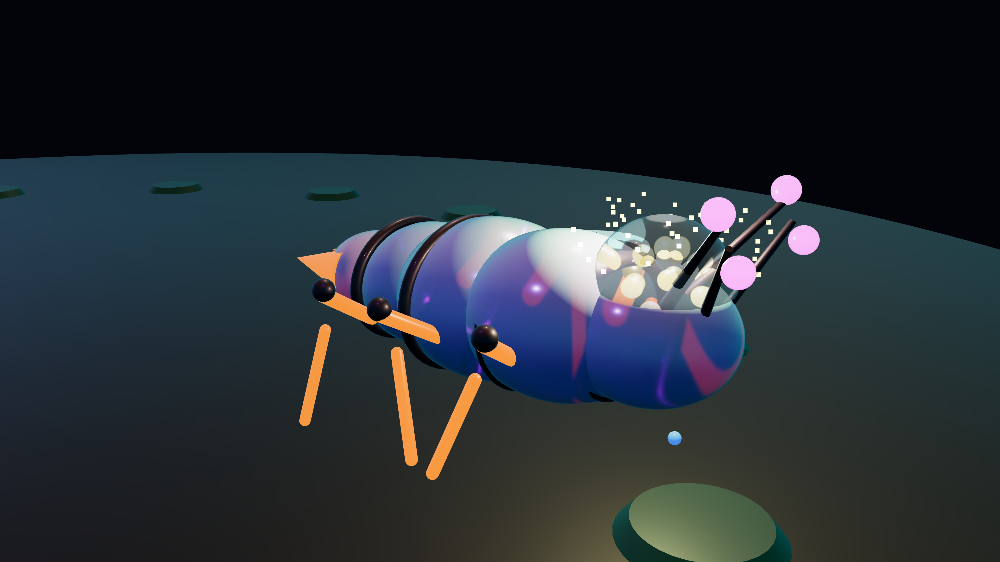
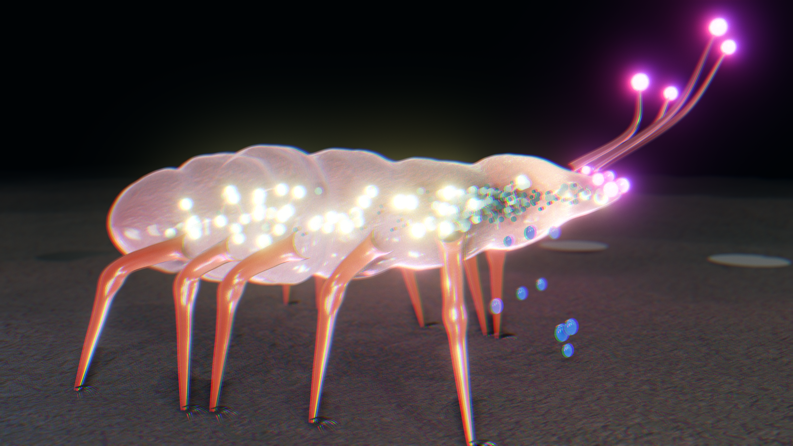
rate[] at t=720. Studio scene, not Mini World. By Artificial Life.SYNTHETIC The v4 stills and clip below are driven by synthetic/state_v2.synthetic.jsonl because results/state_v2.jsonl doesn't exist yet. They are a schema test, not sim output, so they are not real results.
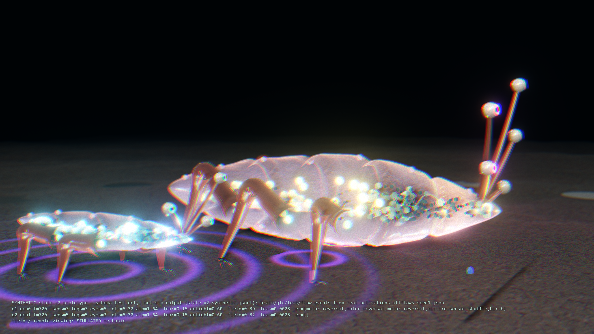
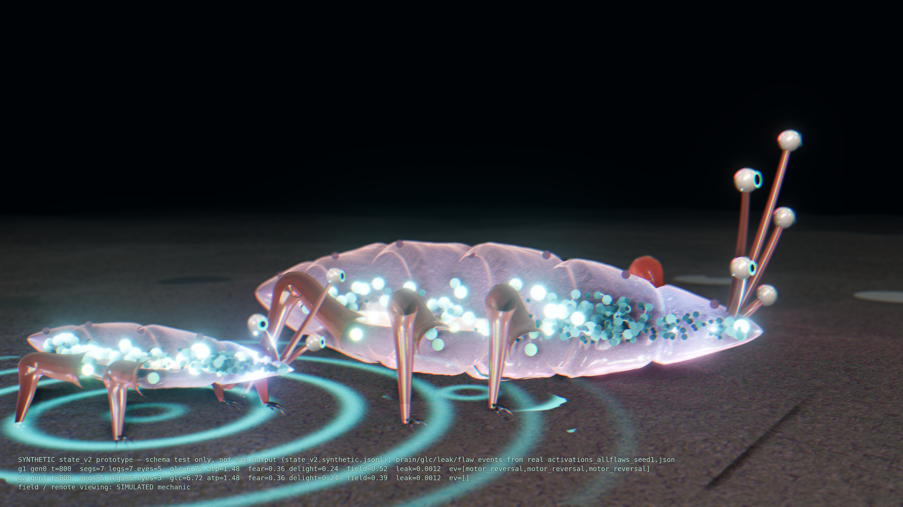